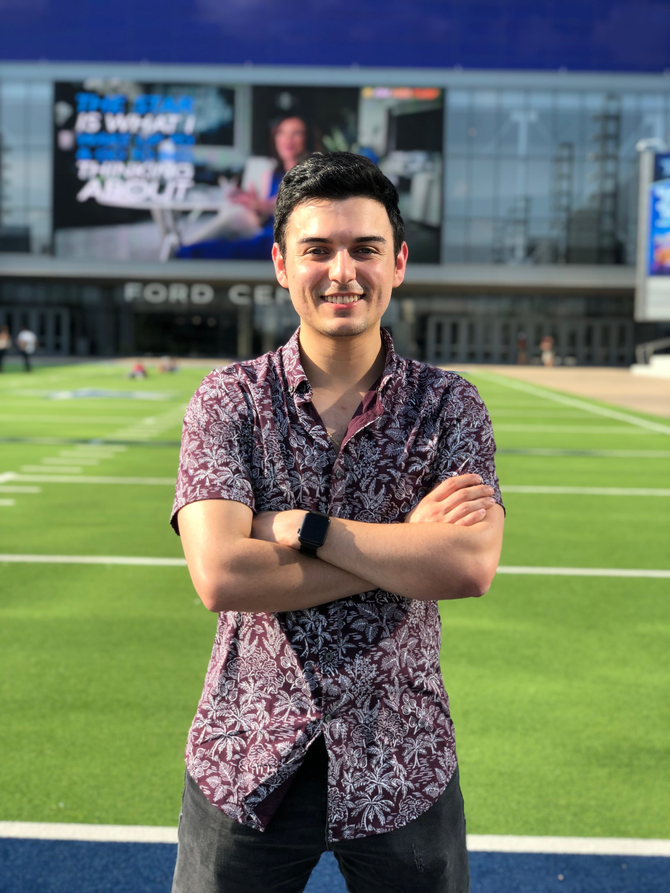

Camilo Villamizar
Bio
-
Hey there! Thanks for looking at my website!
My name is Camilo, and I'm currently a senior attending SMU in Dallas, Texas Studying Computer Science. I am passionate about Data Science, Web development and Cloud Computing and I am looking for work in one of these fields starting June 2020. Please take a look around my website and feel free to reach out to me for anything using the email link at the top of the screen. Thank you. *Please note this website is a work in progress, I am currently enrolled in a GUI class and will continue to update this site as I learn more about front-end web devlopment this year.* - 
Experience
Back to top